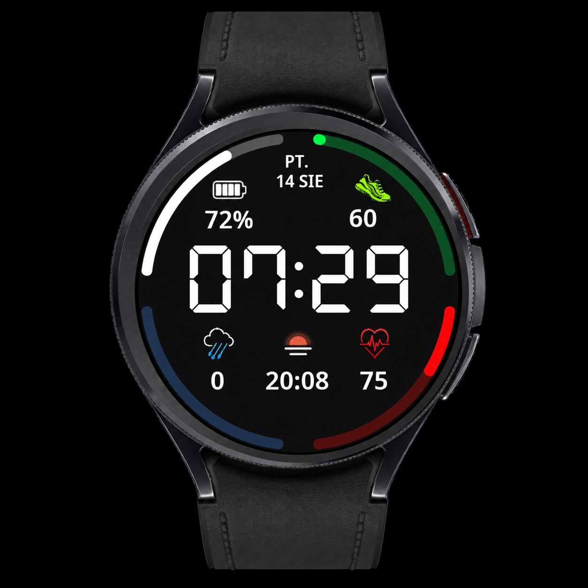

Clear Vision · Wear OS
CV05 Edge
Essential data, framed by progress.
CV05 Edge places four progress bars around a clear digital layout. Large time digits and distinct icons keep everyday information readable, while the colored edge indicators give the watch face its character.

Key features
- Large time with thin and bold font options
- 4 progress bars around the edge
- Date, battery, steps and heart rate
- Weather and precipitation probability
- 1 editable complication
- Color customization and AOD
Gallery
Gallery — 8 images
Select an image to view it full size.
What do the four bars show?
The battery bar shows the watch charge level. The steps bar follows the daily goal set on your device. The weather bar represents precipitation probability, while the heart-rate bar displays the reading on a scale from 0 to 240 BPM.
Choose the look and one data field
Select light, thin time digits or the more prominent bold style. Pick a color theme and assign a compatible data source or shortcut to the single editable complication. The other elements and four bars retain their assigned functions.
Always-On Display
When the watch enters Always-On Display, the face uses a simplified view that keeps the time readable. Enable AOD in the watch settings; its availability and behavior also depend on your device and system settings.
How to customize
- Set CV05 Edge as your active watch face.
- Touch and hold the face, then select Customize.
- Select thin or bold time digits, choose a color style and assign data to the editable field.
- Confirm your selection, return to the watch face and check your data.
Option names may vary by watch and Wear OS version.
Installation and setup →Extra data: Phone Battery Complication
The watch face works without Phone Battery Complication. This external app by amoledwatchfaces is required for selected additional data sources, such as phone battery. Install and configure it on both your Android phone and Wear OS watch. Available options depend on whether the selected field supports the data source.
Compatibility and complications
This watch face is designed for compatible Wear OS watches. Check device compatibility on Google Play before installing. Complication availability, appearance, text length and refresh behavior depend on your watch, Wear OS version and data provider. Not every complication works in every field. If a field remains empty, check the selected app’s permissions or choose another compatible source.
Questions about CV05 Edge
Are all fields editable?
No. CV05 Edge includes one editable complication.
What does the weather bar mean?
It shows precipitation probability.
What is the heart-rate bar range?
It runs from 0 to 240 BPM. It visualizes the reading rather than assessing your health.